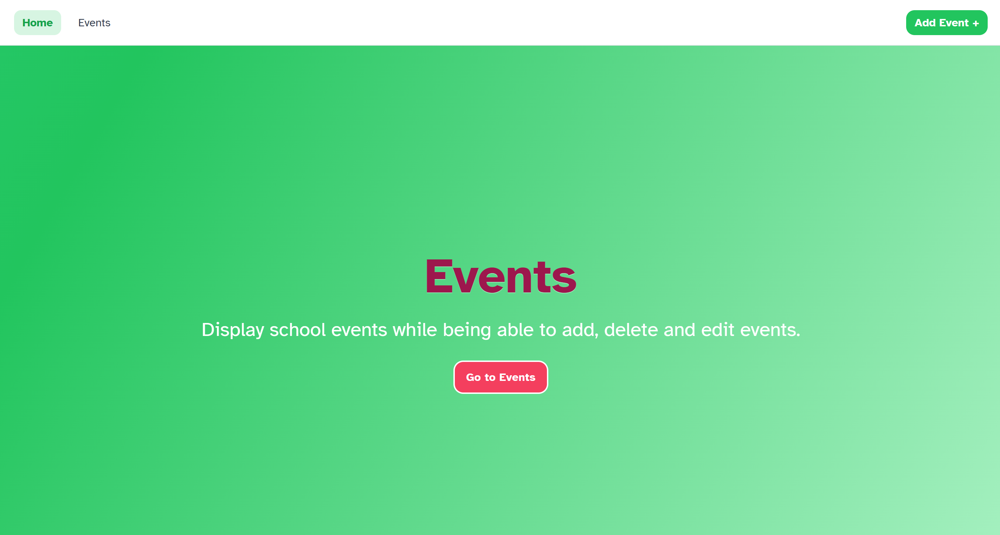
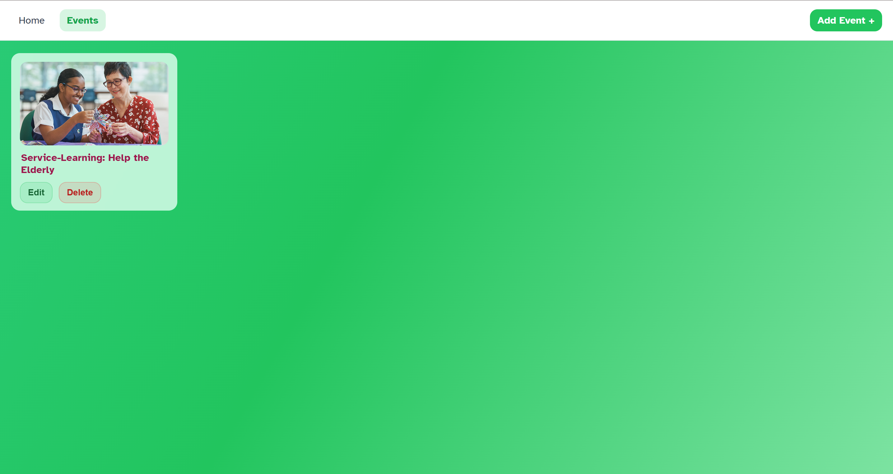
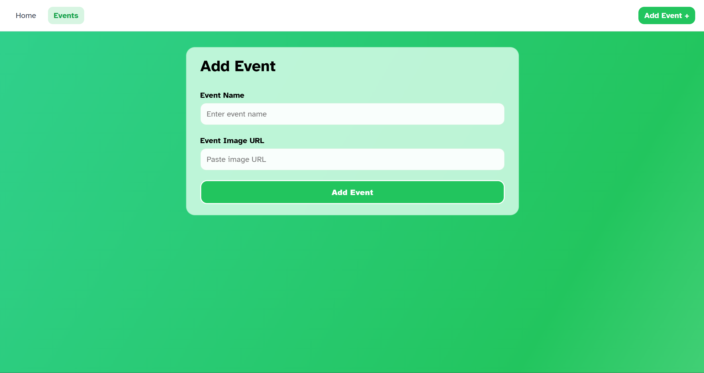
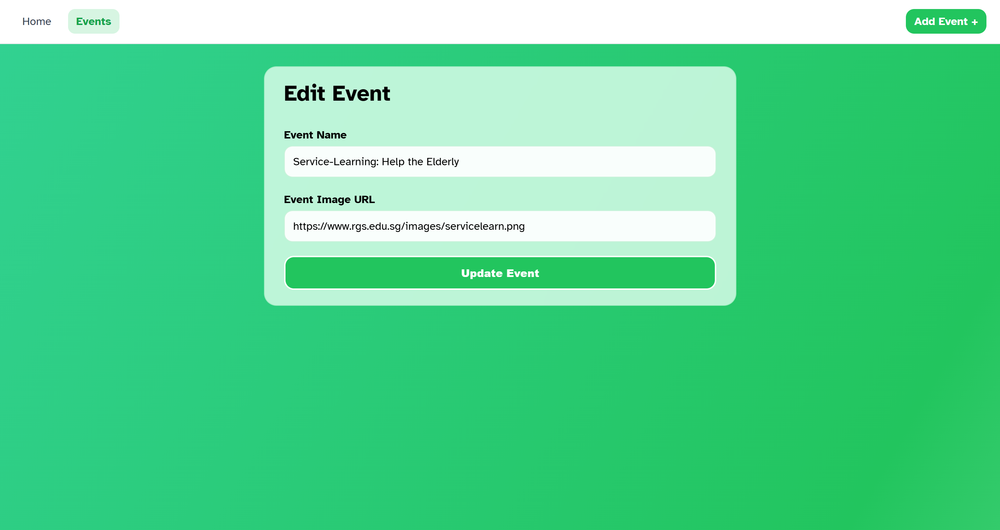
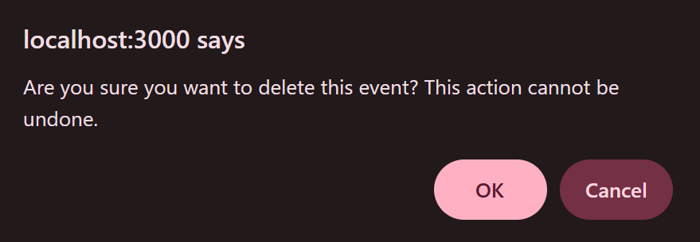

Campus Engagament Website







/ route (home page)
• Display title and website text
• A button "go to events" which directs users to /events route
/events route
Display each event in a green background with dark purple title.
Each drawing consists:
• Its title and image
• Edit Button and Delete Button
Clicking the card or clicking edit button will direct sers to
Clicking delete button will result in a delete browser prompt warning to confirm deletion.
/events/new route
the fields (data) for adding drawings:
• Event name
• Event Image URL
/events/:id/edit route
Retrieve the pre-populated fields (data) from drawings:
• Title
• Description
• Completed Date
• Image
• Details
Delete prompt
Objectives
To apply React JS concepts in conceptualising and building a full-stack web application that addresses a
real-world problem.
This proposed application should:
• Allow users to view and manage information
• Support data creation, modification and deletion handling
• Provide a clear and usable interface
• Handle client–server communication through APIs and managing application state effectively
• Demonstrate meaningful interaction between frontend and backend
Technical Competencies
Frontend Development
• Utilise React JS to create webpage functional components
• Apply React Hooks (useState, useEffect) for state
• Client-side routing using React Router (dynamic routes and navigation)
• Form handling and toggle button
• Conditional rendering for loading and error states
Backend Development
• Server-side development using Node.js and Express
• RESTful API design and implementation (GET, POST, PUT, DELETE)
• Request and response handling using Express middleware
• JSON data handling and API error management
Database & Data Management
• Design a MySQL database with appropriate fields
• Writing SQL queries for CRUD operations
• Connecting backend services to a MySQL database
• Ensure data is proper between frontend and backend
API & Integration
• Frontend–backend communication using Fetch API
• Handling asynchronous requests and responses
• Environment variable usage for secure configuration
UI & Styling
• Styling user interface using CSS
• Layout design using Flexbox and Grid
Development Practices
• Debugging and resolving frontend and backend issues
• Code organisation and project structure management
• Iterative development and feature refinement
Functionalites/Features
• View a list of events retrieved from a remote MySQL database
• Add new events through a form
• Edit existing event details
• Delete events with a confirmation prompt to prevent accidental deletion
• Dynamic edit page consisting of a pre-filled form for editing individual event details
• Loading and error handling for better user experience
Building process
Span over a short two week duration, this campus engagement website was developed by first setting up a
MySQL database and backend API using Node.js and Express.
Then, the frontend was then built using React JS, where reusable components were created for event display and forms.
API endpoints were integrated to enable data fetching and manipulation followed by creating the routes.
Lastly, styling and usability improvements were implemented. Testing and debugging were done iteratively to ensure
smooth data flow between the frontend and backend. I choose green as my main background theme as part of my diploma
institution colours and purple-red text to complement it which also ensure text is legible and clear.
Watch the video to see how the website works!